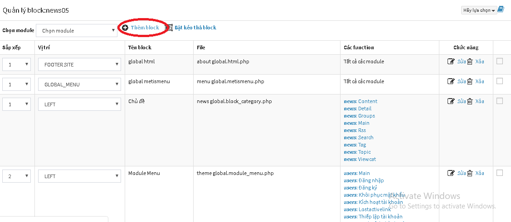

Hiển thị bảng thống kê thành viên điểm cao
Thực hiện kích hoạt tính năng thống kê này theo các bước bên dưới:
BƯỚC 1: Đăng nhập quản trị
Tiến hành truy cập khu vực quản trị theo thông tin đã có, tại đường dẫn domain/admin/index.php (với domain là tên miền của bạn)
BƯỚC 2: Kích hoạt block topscore
- Từ giao diện chính quản trị, click vào menu Quản lý giao diện (1) => Quản lý block (2)

- Nhấn Thêm block (3). Lúc này, một cửa sổ mới sẽ hiện lên:

Bạn cần quan tâm tới những thông tin này:

| Trường thông tin | Mô tả |
|---|---|
| Kiểu block (1) | Trắc nghiệm => global.block_topscore.php (2) |
| Number_day (3) | Là số ngày giới hạn thống kê Numrow (3): Số lượng thành viên hiển thị trong danh sác |
| Tên block (4) | Đặt tên hiển thị cho khối này, VD "Thành viên có điểm cao" |
| URL của block (5) | Bạn có thể bỏ qua bước này. |
| Template (6) | Chọn Mặc định |
| vị trí(7) | Chọn khối bạn muốn hiển thị trên giao diện |
| Ngày hết hạn (8) | Bạn có thể bỏ qua bước này nếu muốn bảng thống kê thành viên điểm cao tồn tại vĩnh viển. |

| Trường thông tin | Mô tả |
|---|---|
| Hiển thị trên thiết bị (9) | Bạn chọn thiết bị mà bảng thống kê thành viên điểm cao được phép hiển thị |
| Các nhóm được xem (10) | Bạn chọn nhóm được xem bảng thống kê thành viên điểm cao |
| Áp dụng cho module (11) | Tích vào Tất cả các module |
Sau khi hoàn thành các bước trên nhấn Chấp nhận (12) để hoàn tất
BƯỚC 3: Hiển thị block
Sau khi thêm, bạn trở lại giao diện chính ở khu vực site, sẽ thấy sự xuất hiện của block thành viên điểm cao